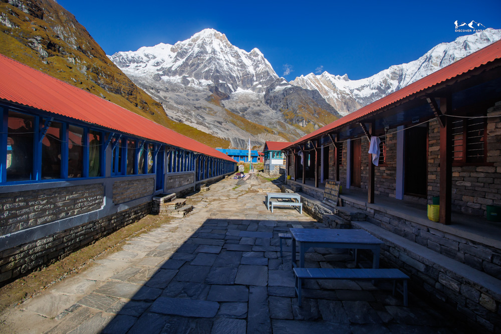

Explore handpicked trekking experiences across the Annapurna region and beyond. Our routes are designed to combine authentic village life, less crowded trails, and breathtaking Himalayan views.
01
Village culture + Himalayan views
View Trek → 02
02
Ridge trek towards Fishtail
View Trek → 03
03
Beautiful offbeat ridge trek
View Trek →
04Classic Himalayan journey
View Trek →
05
Short and scenic trek
View Trek → 06
06
Best viewpoints in one trek
View Trek →
07
Mulde, Poonhill & Kokhe
View Trek →We focus on authentic experiences by connecting local homestays, promoting lesser-known trails, and ensuring every trek offers both cultural depth and panoramic Himalayan beauty. Our routes are carefully designed to avoid crowds while maximizing viewpoints and local interaction.